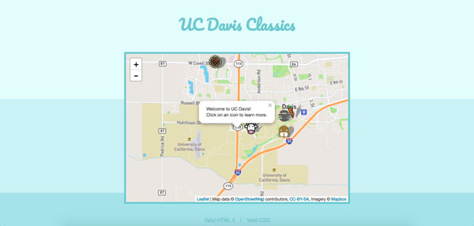
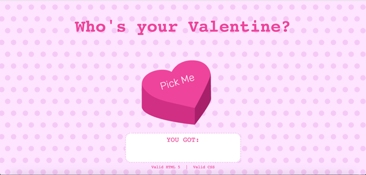
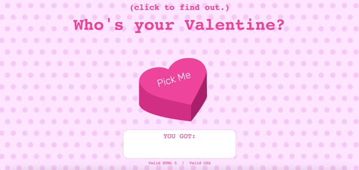
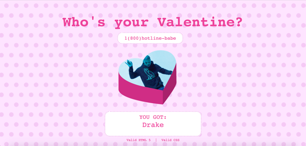
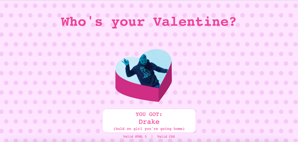
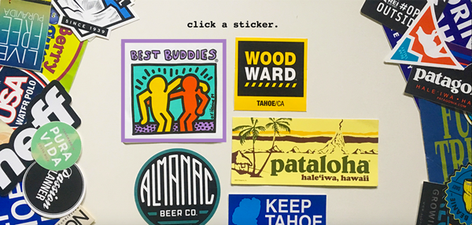
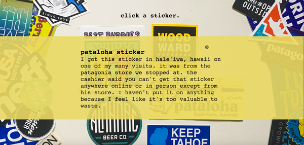
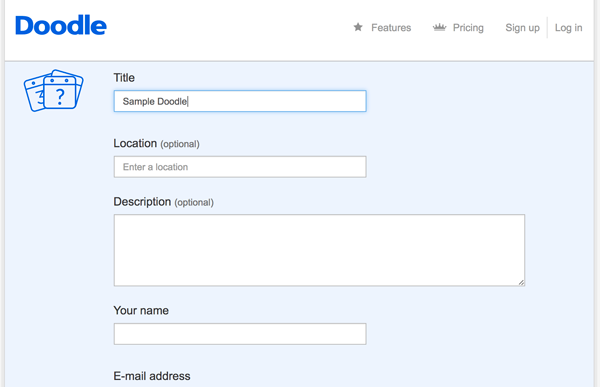
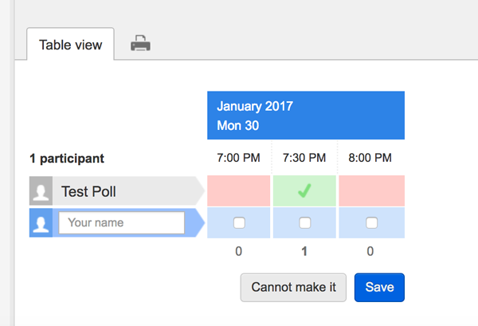
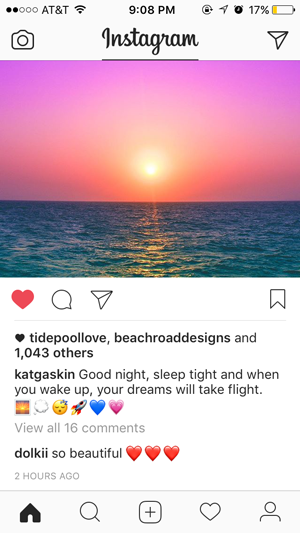

My Studio 5 Project
learning leaflet // 02.19.17
For this studio I chose to learn about leaflet. I struggled with it a little bit because there's not a ton of clear instructions. There was a great portion of the website with some tutorials but you had to learn a lot of techniques yourself.
I feel like there's a ton I wished I could figure out how to do but just didn't get the resources. At first I wanted to use the maps of leaflet to practice for my final project which would show users where recylce centers would be. But
I changed my project so the map wasn't as useful. My new project would deal with children and bullying so I focussed more on icons and simple, cute maps.
First I changed the mapbox to a more colorful map. Then I realized you can use icons to map points on a map so I thought I'd map out some of Davis's classic/secret spots. The icons are able to be clicked on to show more information about them.
I wanted to have a point pop up as "You are here" but I couldn't get that portion to work properly. I do know that it's possible though. I think the library is good for visualizing maps and points but I don't know if it would be good for
planning a route. Its website was helpful and I think it is relatively easy to use.

Download Leaflet Here
My Studio 4 Project
valentine's fun // 02.11.17
My various visual elements are all connected to each other. When you click the candy heart, you get not only a random image of your valentine but also their name, a tooltip on the image and a tooltip on their name. This photo shows what the
page looks like before anything has been clicked or hovered

A user may not be sure what needs to be done on this page. If the user hovers over the title, this is what they will see instructions above the title:

The instructions are above the title so that the page doesn't have too large of gaps without it being hovered on. This hover is a tooltip because it is only needed if they're confused. The user then clicks the candy heart and sees what is
captured in the next image. They're assigned a valentine.

If they leave their mouse there for a couple seconds, a little saying will pop up above it. this is seen in the image above. Each valentine has a different saying that corresponds to that person. When the heart is clicked the name also appears.
If the user scrolls over the name and waits a second, there is a funny comment to go with it.

The three elements I think lend themselves to my interactive design the most are the cohesion of all the small tips relating to the same person, the sparkle noise that occurs when you get your valentine and the cursor change on items with
tooltips (can't be seen in screenshots but cursor changes to pointer on title, image and name).
My Studio 3 Project
an ode to my sticker collection // 02.06.17
My studio 3 project was based around my large sticker collection. I chosed to feature 5 of my favorite stickers and explain why they are my favorite when they are clicked on

I connected the background image to the interactive aspects to make the site a cohesive experience. I also used colors in my interactive elements to match each sticker that was being discussed. I wanted everything to feel like it was meant
to be together as one complete page. Below you can see the cohesiveness of the purple border on the Keith Haring sticker that appears when you hover.

I think the three aspects that support effective and interesting interface design are: using an images as not only the background but also a key aspect of the site, scroll effects like the matching border on each sticker, and the cursor change
when you encounter a clickable point. The cursor allows users to know what to do next while the borders and background help create an immersive interface.
Doodle Poll Review
Doodle Poll is a way to determine what time multiple people are all available to meet up or find time to see each other. It is an integral part of my job as a student manager at Campus Rec and Unions because it makes it easier to schedule
leadership meetings or group trainngs with lifeguards.

The interface is simple and clean and relatively easy to use. The home page can be seen above. It clearly has a button to press and shows an example of what your survey will look like. It follows generalities from most everyday designs as
explained by Bill DeRouchey. The colors are simple: red means not available at that time and green means prefers that time. These colors commonly mean such
things.

Once you click on the 'Schedule and Event' button, the page above is seen. This page is a form and is easy and clear to use. You enter your information to then create a doodle poll. The buttons are often blue on this website to match its color
scheme but are always large and visible.

This is what a finished doodle poll will look like. The buttons are once again blue and clearly labeled while the red and green show negative and positive traits like being available or unavailable.
My First Blog Post

A user interface that I use very often is instagram. I am on instagram so many times a day I can't keep count. I enjoy it because it is mainly visuals with a little bit of text. The photos are large enough to take up the full screen of my
phone and the design is simple, mainly black and white text for comments and likes. The colors really come from the users' photos and posts.
It's also a great medium for creativity. The interface is so simple that it allows for the users to do a lot of the designing of it. It's also very easy to use becuase of its simplicity. The image to the left is a screenshot I grabbed off
of my phone. You can see the simplified icons and clean black and white scheme. The color of the interface is coming from the photo that a user has posted.